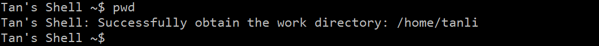

简易 Shell 实现
2022 秋 Unix 大作业作业要求
编写一个简单的shell（myshell），满足：
可以运行 不带参数的外部命令
支持标准
I/O重定向可以通过 管道 连接两个命令；（外部命令的路径可以是固定路径，如当前目录）
要求：
尽量使用第八章所介绍的系统调用函数
所有 源代码写在 一个 .c 文件中，篇幅不超过 450 行
源程序 中（例如注释、变量名和函数名等）具有 明显的身份信息
可执行程序的 命令提示符 具有编写者的 身份特征
注意：本作业 禁止 使用
system函数，因为该函数的功能就是执行shell命令最终提交：
一份作业报告，内容包括：
myshell的 功能概述实现每个功能所用到的 系统调用，功能实现的简单 流程图（可用伪代码表达）
源代码
作业报告
功能概述 & 展示 & 实现功能所用系统调用 & 实现流程
满足作业要求
所有源代码写在一个 .c 文件中（
TanShell.c）代码量：
344行（包括空行和注释行）源程序中身份信息：
- 如图：（部分）


- 如图：（部分）
可执行程序的命令提示符中编写者的身份特征：
- 如图：（部分）


- 如图：（部分）
基本功能
myshell命名：TanShell作者：
20373864 谭立德实现外部指令：
本程序支持运行不含参数的外部指令
系统调用：
execvp，fork函数实现流程：
对于无法匹配内部指令的输入，在本程序进行解析、整理后使用fork函数开启一个新的进程，在该进程中使用execvp指令尝试执行该输入，execvp指令会从环境变量所指的目录中查找符合参数file的文件名， 找到后执行该文件， 然后将第二个参数argv传给该执行的文件，没找到则会被本程序捕获到异常并输出到标准错误输出中（不支持的指令）展示：
ls指令
cat指令
标准
I/O重定向本程序支持标准 I/O 重定向
系统调用：
dup2函数、open函数、creat函数实现流程：
解析识别命令行中的>、<、>>，并且将对应文件打开后将当前进程的标准输入输出指针指向重定向的文件处展示：

管道
本程序支持通过管道连接两个命令
系统调用：
pipe函数、dup2函数、fork函数、close函数实现流程：
解析识别命令行中的|分割输入命令，并开启对应的管道，并且每一个分隔出的命令使用fork函数创立一个供其运行的进程，将首进程的输出接入管道，将末进程的输入接入管道，然后分别执行命令即可展示：

高级功能
由于本程序是本人写过的第一个 Shell 程序，因此本人在 满足本次作业要求的前提下 实现了一些 额外的 功能使我的 Tan’s Shell 变得更加完善，使其具备更多功能
路径压缩
系统调用：无
实现流程：
把程序运行路径视为家路径，在Shell中显示路径时把家路径替换为~展示：
实现内部指令：
目前已经实现的内部指令：
type指令功能：
识别输入指令是否属于内部指令系统调用：
无实现流程：
将当前命令与已实现的所有内部命令查看是否相等展示：

cd指令功能：
更改当前程序工作路径系统调用：
chdir函数实现流程：
使用chdir函数直接改变工作路径展示：

pwd指令功能：
输出当前工作路径系统调用：
getcwd函数实现流程：
使用getcwd函数直接获得工作路径展示：

chmod指令功能：
改变指定文件的权限系统调用：
chmod函数实现流程：
将输入的权限数转为mode_t类型的数后使用chmod函数展示：
quit指令功能：
退出程序系统调用：
无实现流程：
退出循环，程序结束展示：
支持运行含参数的外部指令
实现逻辑：
解析函数支持了带参数的指令的解析和处理展示：（部分）

支持同时重定向输入$/$输出
实现逻辑：
输入输出可同时重定向，两者的文件指针均修改展示：
支持通过多个管道连接多个命令
实现逻辑：
可同时开启多个管道，管道间输入输出相连接，最后首尾与标准输入$/$输出相连接展示：
支持管道 & 重定向结合使用
实现逻辑：
管道 & 重定向两个功能相互独立，支持同时进行展示：

错误检测 & 自定义错误信息输出
实现逻辑：
对于各种系统调用的返回值进行捕获并在捕获到异常时将异常信息输出到标准错误输出处展示：（部分）

源代码
见附件
ps: 运行路径不能有中文
作业感想
原本我认为的 Shell 程序是和 OS 一样拥有庞大的底层代码支撑的一个输入输出交互程序，但真正开始动手实现这次作业后，我理解到 Shell 的编程也可以轻量化，在只实现最基础的功能的情况下我通过这次作业体会到了 Shell 的基本实现，系统调用的基本使用，具备了编写小型 Shell 交互程序的能力
by Tan